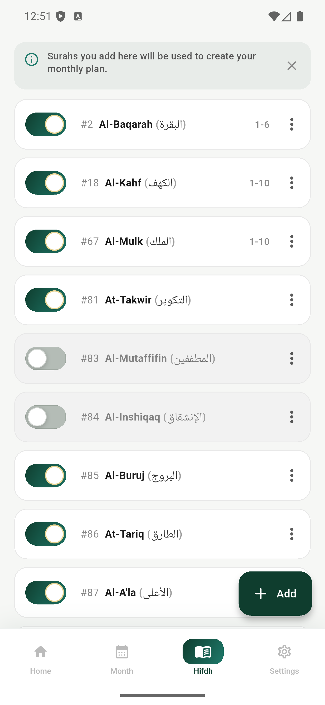
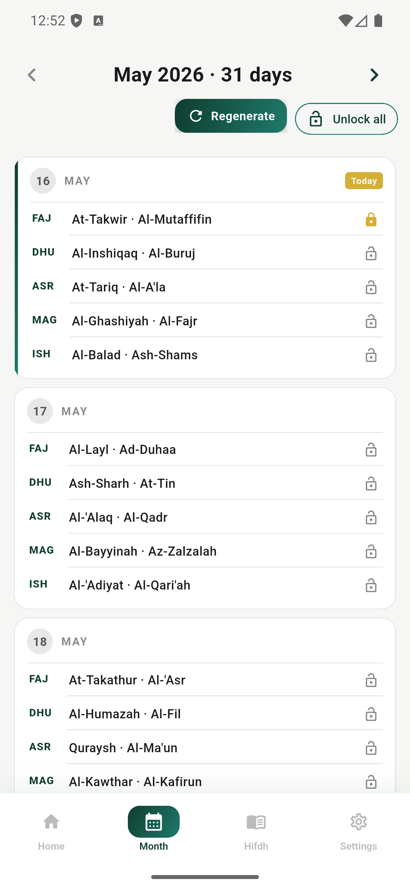

Recite every surah
you've ever
memorized
Ayatura rotates the surahs you've committed to memory across your five daily prayers, so none are overused, and none are slowly forgotten.

We memorize dozens of surahs over many years.
Yet in prayer, we tend to recite the same handful, and
the rest slowly slip away.
Three quiet steps to a balanced month.
No accounts. No setup wizard. You're praying with a rotation by the end of your next prayer.

Tell us what you know
Toggle on the surahs you've memorized, by Juz, by range, one at a time. Edit any time.

We balance the month
Ayatura distributes them randomly but fairly across 5 prayers × 30 days, so each surah returns.
Open it when you pray
A glance shows the two surahs for your current prayer. Nothing more, nothing less.
Designed for the moment between adhan and iqamah.
Every screen earns its place. Nothing competes for your attention while you prepare to stand before your Lord.
A pool you can shape
Add by single surah or pull in a whole Juz at once. The plan only ever uses what you've added.

Whole Juz, one tap
Just finished Juz 'Amma? Add all 37 surahs at once and start rotating tonight.
Today, at a glance
Your current prayer rises to the top. Past prayers fade. Future ones wait patiently, locked until their time.
31 days, planned
Scroll the whole month. Regenerate if you want a fresh shuffle. Lock anything you'd like to keep.
Knows where you are
Tied to local prayer times, your "now praying" card moves with the day, on its own.

A quick refresher, right inside the prayer card.
Tap any surah in today's plan to open it ayah-by-ayah with translation, perfect for refreshing your memory in the minutes before salah.
Your rotation, before you even open the app.
A glance at your home screen and you know what to recite. No taps. No unlocks. Especially helpful for the moments right before salah.

Offline-first
Plans, hifdh and the widget all run without a network.
No login
Open the app, you're already in. No accounts, no email.
No ads
Nothing flashing. Nothing tracking. Just your plan.
Free, lightweight
Small download. No subscription. Made as sadaqah jariyah.
"The most beloved deeds to Allah are those done consistently, even if they are few."
Quietly answered.
Do I have to memorize the whole Quran to use Ayatura?+
Does it work without internet?+
What if a surah is too long for one prayer?+
Can I lock or change a day's plan?+
Where does the Quran text come from?+
How much does Ayatura cost?+
A calmer rhythm for the surahs you've already learned.
Free on iOS and Android. No accounts, no ads, just open it before your next prayer.